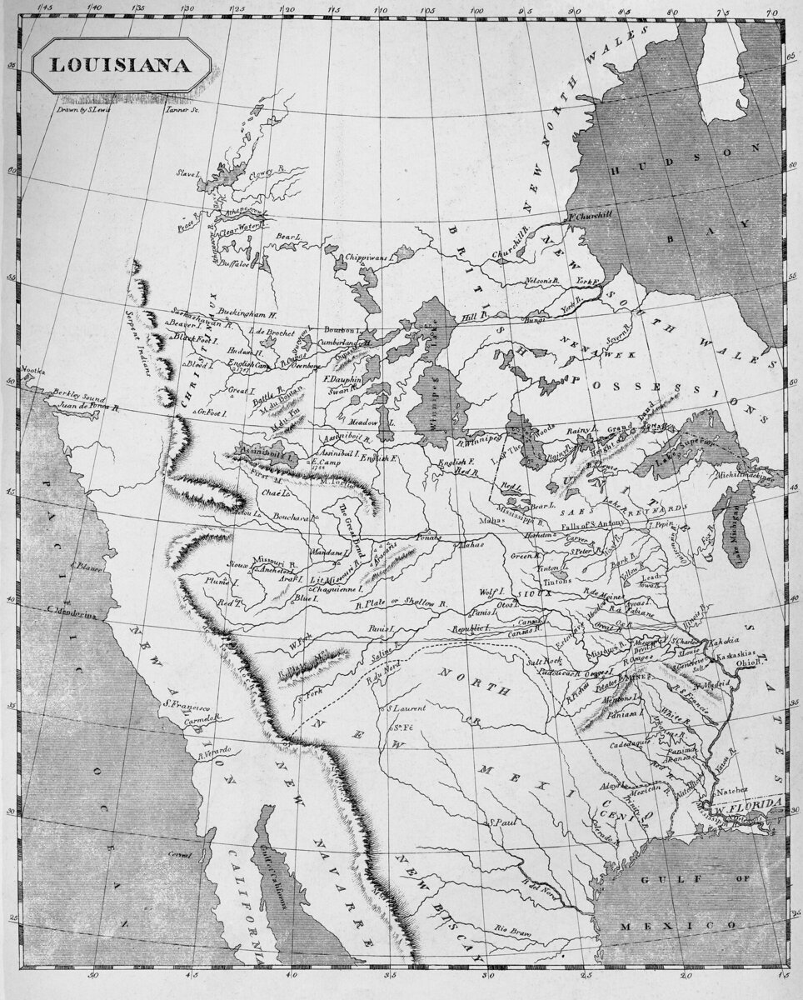

B1 · American History
The Louisiana Purchase
Jefferson sent two men to buy a city. They came home with a third of a continent.
Play the audio and follow along, then read it again on your own. Tap or hover over a highlighted word to see what it means.
In 1802 the United States had a practical problem. Farmers in the west sent their crops down the Mississippi River to the port of New Orleans, and from there ships carried everything to the east coast and to Europe. Without New Orleans, the whole western economy stopped.
The trouble was that New Orleans did not belong to the United States. Spain had controlled it for years and had allowed American boats to use it. Then Spain quietly gave the territory back to France, and France was now run by Napoleon Bonaparte.
President Thomas Jefferson sent two men to Paris with instructions to buy the city, or at least to buy the right to use the port. He authorised them to offer up to ten million dollars.
They arrived to find that the French government wanted to talk about something much larger. Napoleon's foreign minister asked what the United States would pay for the whole of Louisiana.
Louisiana, in 1803, did not mean the modern state. It meant a territory of more than two million square kilometers, stretching from the Gulf of Mexico up to today's Canadian border.

Napoleon had reasons to sell. His plan for an American empire had depended on the sugar island of Saint-Domingue, and the enslaved people there had risen against French rule and defeated three armies, one of them destroyed as much by yellow fever as by fighting. Another war with Britain was coming, and France needed money more than it needed a territory it could not defend.
The two Americans had no authority to buy a continent. They bought it anyway, for fifteen million dollars, and sent the news home. The price worked out at roughly three cents a hectare.
Jefferson then had a problem of his own making. He had spent his career arguing that the federal government could only do what the Constitution specifically allowed, and the Constitution said nothing about buying territory. He considered a constitutional amendment, decided there was no time, and sent the treaty to the Senate, which approved it.
The purchase doubled the size of the country at a stroke, and it is usually described as the best deal in American history. It is worth being precise about what was sold. France sold its claim to the territory. It did not sell the land in any practical sense, because the land was lived in — by the Osage, the Sioux, the Pawnee, the Mandan and many other nations, none of whom were consulted and most of whom had never seen a French official.
Everything that followed grew out of that distinction. The United States now claimed a west it had never seen, which is why Jefferson sent Lewis and Clark up the Missouri the following year, and why the next sixty years of American history are largely the story of what happened when the claim met the people already living on it.
Key Vocabulary
- a crop a plant grown in large amounts for food or sale
- a foreign minister the member of a government responsible for relations with other countries
- an empire a group of countries or territories ruled by one state
- a treaty a formal written agreement between countries
- the Senate the upper house of the United States Congress
- an amendment a formal change to a law or a constitution
- a claim a statement that something belongs to you
- to consult to ask somebody for their opinion before deciding
The Louisiana Purchase — B1 · American History · Renan the Teacher, English Language Academy · https://renangrossi.github.io/englishclasses/reading/b1/louisiana-purchase.html
Interactive Exercises
Practice
Complete each exercise, then click Submit to see your score and an explanation for every answer.
Speaking & Writing
Discussion
There are no right answers here — use these to practice speaking, or write a short answer to each.
- The negotiators went far beyond their instructions. Was that the right thing to do?
- Jefferson believed in a small, limited government and then made the biggest land purchase in the country's history. Can you think of a modern leader who had to act against their own principles?
- How would you explain the difference between selling a claim to land and selling land that people are living on?